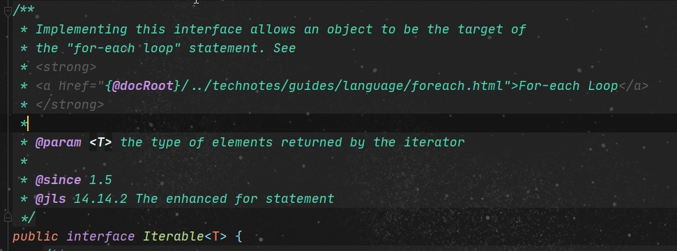
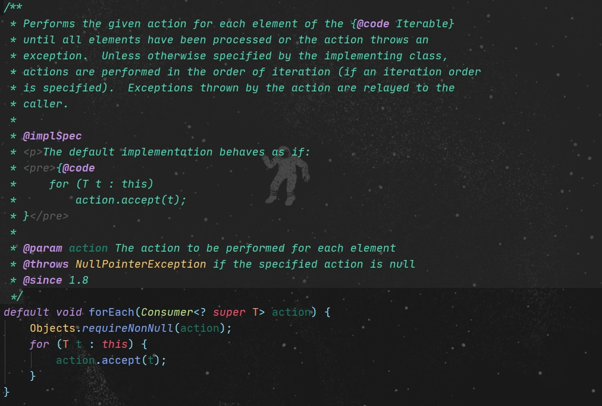

jdk1.8_lambda

参考Haskell-函数式编程
核心功能性函数接口（有且只有一个抽象方法的接口）
- Consumer
:消费型接口 void acept(T t); 1
2
3
4//消费型接口Consumer，输入一个参数，对其进行打印输出
Consumer<String> consumer = (x) -> System.out.println(x);
//打印字符串
consumer.accept("Hello world!"); - Supplier
:供给型接口 T get(); 1
2
3
4//供给型接口Supplier，返回指定字符串
Supplier<String> supplier = () -> "Hello world!";
//获取字符串
supplier.get(); - Function<T,R> :函数型接口 R apply(T t);
1
2
3Function<String, Integer> function = (x) -> x.length();
//获取字符串长度
function.apply("Hello world!"); - Predicate
:断言型接口 boolean test(T t); 1
2
3
4//断言型接口Predicate，输入数字，判断是否大于0
Predicate<Integer> predicate = (x) -> x > 0;
//获取判断结果
predicate.test(10);
案例
1.Iterable.forEach(Consumer<? super T> action)
1 | List<String> soutList = Arrays.asList("one","two","three"); |


1). Iterable接口允许一个对象成为forEach的目标
2). 这里的forEach被声明为一个默认方法，并接收了一个消费者类型的函数接口，先查找匹配对应的操作，若不为空则执行操作
3). 接口中的默认方法可以不被实现类实现
4). 如上代码中，输出集合soutList调用了foreach方法，箭头左边是参数，右边是抽象方法的实现内容或已有方法的引用
5). 当参数列表中的参数和方法签名匹配时，可以通过 :: 直接引用方法，包括构造方法
2.Collection.stream()、Stream、Stream#filter(Predicate)、Collector、Collectors、Collectors#toList()
1 | /** |
1). Collection#stream() 返回一个Stream序列
2). Stream 流
- A sequence of elements supporting sequential and parallel aggregate operations
- 支撑顺序和并行聚合操作元素的序列
- lazy： computation on the source data is only performed when the terminal operation is initiated, and source elements are consumed only as needed.
- 惰式执行：即仅在终端操作启动时才执行对源数据的计算，并且仅在需要时使用源元素。
- 在对流进行“操作”（类似查询和过滤）时，这些行为应该是无干扰（不修改流的数据源）且无状态（其结果不依赖于流管道执行过程中可能改变的任何状态）的
- 消费性质，只使用一次，不可以被重用
3). Stream#filter(Predicate) 对流进行过滤 中间操作
4). Predicate 断言功能性函数接口，返回Boolean值 见上文
5). Stream.collect()
- 返回一个结果容器
- <R, A> R collect(Collector<? super T, A, R> collector)
- <R> 结果的类型
- <A> Collector的积累类型
6). Collector 执行结果转换 Collectors 实现Collector的各种还原操作
- public interface Collector<T, A, R>
- <T> 输入元素的类型
- <A> 还原运算的可变累积型（通常隐藏作为一个实现细节）
- <R> 还原运算的结果类
7). Collectors#toList() 返回一个Collector ，其累积的输入元素融入到一个新的List中
- public static <T> Collector<T, ?, List<T>> toList()
- <T> 输入元素的类型
3.Stream#map(Function)
1 | /** |
1). Stream#map(Function)
- 返回指定类型的流 中间操作
- Function 函数型功能接口 见上文
- java.util.stream.Stream<T> <R> Stream<R> map(Function<? super T, ? extends R> mapper)
- <? super T>/<? extends T> <? super T>表示包括T在内的任何T的父类，<? extends T>表示包括T在内的任何T的子类
博客内容遵循 署名-非商业性使用-相同方式共享 4.0 国际 (CC BY-NC-SA 4.0) 协议
本文永久链接是：https://liminghua.gitee.io/2020/06/24/jdk1-8-lambda/
点击扫描下方二维码,支持作者!